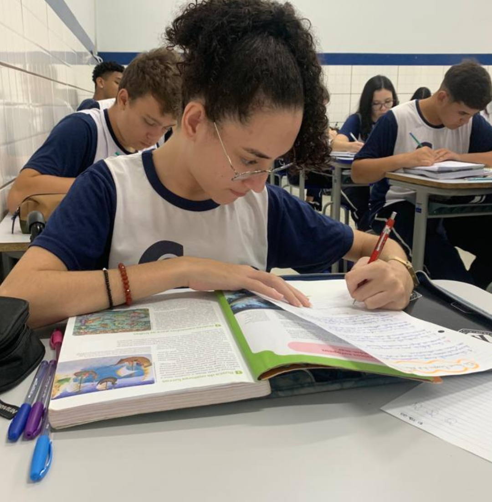
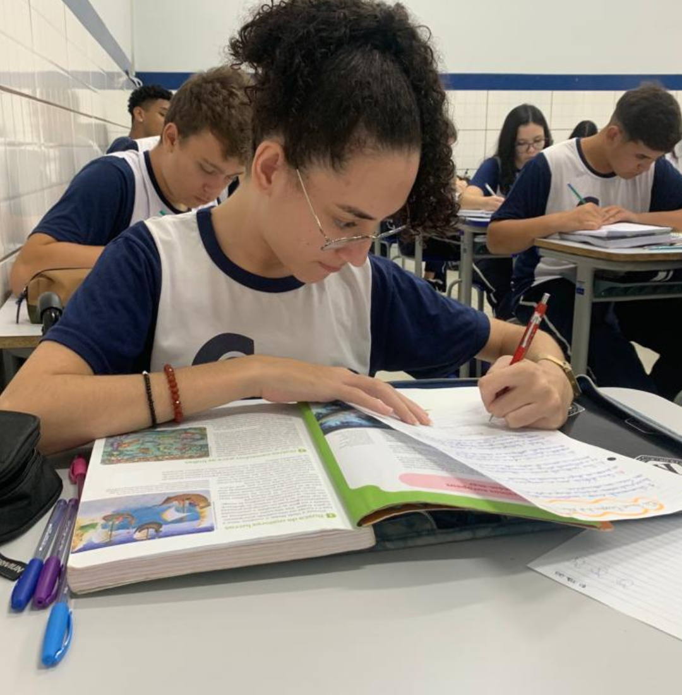

"Me chamo Isabelle Beatriz Lopes, tenho 16 anos. Nasci no dia 26/03/2007 com apenas 27 semanas (aproximadamente 6 meses), minha prematuridade possui causa até hoje desconhecida. Devido a prematuridade vários eram os riscos, incluindo o de que eu poderia não sobreviver, o que causou grande medo e insegurança em minha família.
Mas eu sobrevivi e para que eu pudesse ter uma melhor chance passei 51 dias na UTI Neonatal, durante esse período fiz uso de oxigênio para que pudesse respirar, mas ainda assim tive também duas paradas cardiorrespiratórias.
Desde o primeiro momento lutei pela minha vida com persistência e após 51 dias a primeira vitória havia sido conquistada, finalmente poderia ir para casa...
Quando tinha aproximadamente 1 ano alguns traços começaram a deixar meus pais intrigados, como não conseguir sentar sozinha , andar somente com apoio e sempre na ponta dos pés, ter espasmos e ter o pezinho virado para dentro. Foi a partir daí que eles resolveram procurar especialistas para entender o meu caso, depois de muita angústia finalmente descobriram que eu era portadora de Paralisia Cerebral Diplégica (cid:G80) e assim minha luta começou. Com o diagnóstico comecei estudar na APAE, para que lá tivesse o amparo necessário, desde então foram várias idas ao ortopedista e várias aplicações de Botox, com intuito de relaxar meus músculos para facilitar a realização de alguns movimentos.
Aos 7 anos depois de muita luta e persistência dos meus pais comecei a estudar em uma escola regular e o sentimento de medo por não ser aceita ou por não adaptar, já não pertenciam somente aos meus pais pertenciam a mim também. Mas mesmo com medo, decidi começar essa nova etapa desafiadoras, passei por situações que para muitos pode ter sido algo "bobo" mas, que me geraram traumas, os quais carrego comigo até hoje, ouvi professores dizerem que eu não era capaz e por muitas vezes me senti excluída. Ainda assim foi nessa escola onde conheci duas pessoas incríveis, a professora Priscila Vasques, que me ajudou com calma e persistência para que eu fosse capaz de chegar no meu objetivo. E minha melhor amiga Flávia, que me aceitou exatamente como eu sou e me fez sentir uma pessoa livre, com ela criei as melhores memórias, dei as melhores risadas, tive as melhores brincadeiras entre tantas outras coisas, quando não podia me defender, sempre tinha a ela pra me proteger.
Em um determinado momento o Botox não produzia mais efeito e as cirurgias precisavam começar, meu coração se encheu de medo mas, eu tinha pessoas maravilhosas que faziam tudo se tornar mais leve. Os desafios não pararam, mas de alguma forma passaram num piscar de olhos, e quando pude perceber, em torno de 5 cirurgias já haviam sido feitas. No ano de 2017 me formei nos anos iniciais do Ensino Fundamental e de novo começava a sentir medo, pois na minha cabeça eu estava perdendo minha melhor amiga, porém eu estava errada, pois 7 anos se passaram e ela continua comigo da mesma forma que sempre esteve, comemorando cada conquista minha como se fossem as dela, me protegendo e cuidando de mim, como uma pecinha extremamente especial para que eu me sentisse inclusa, sou muito grata por tê-la em minha vida!
O ano de 2018 chegou, estava na hora de começar tudo de novo, novo colégio, novas amizades, novos professores e novamente o medo tomava conta de mim, no entanto em pouco tempo já estava rodeada de amigos. Nesse período que conheci meu melhor amigo Adryan, uma pessoa incrível que me recebeu da melhor forma possível, me compreendeu, teve paciência e soube contornar situações que me deixavam mal, uma pessoa que me tratou totalmente normal, ele adora me irritar e fazer Drift com minha cadeira, mas sempre me apoiou e me consolou, ouviu e defendeu, hoje após seis anos ele continua comigo, com certeza tudo o que ele fez e faz tem grande importância para que eu me sinta inclusa, por esse e vários outros motivos sou extremamente grata por tê-lo em minha vida!
Hoje, após 2 anos de pandemia, já estou no 2⁰ ano do Ensino Médio, em um novo colégio, com novas amizades e em busca de oportunidades, enfrentando meus desafios da melhor forma e da forma mais leve possível, tentando aproveitar ao máximo os momentos e colecionando memórias, para que um dia possa lembrar delas com muito amor e felicidade."
FERRAMENTAS

Ao clicar realiza-se audio-descrição de todo o texto para deficientes visuais.

Ao clicar ativa-se mudança de cor para pessoas daltônicas.
Saiba Mais